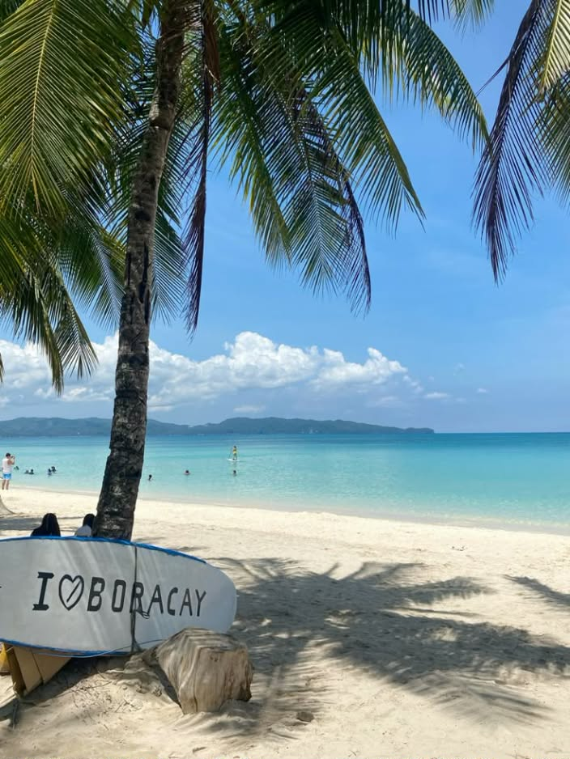
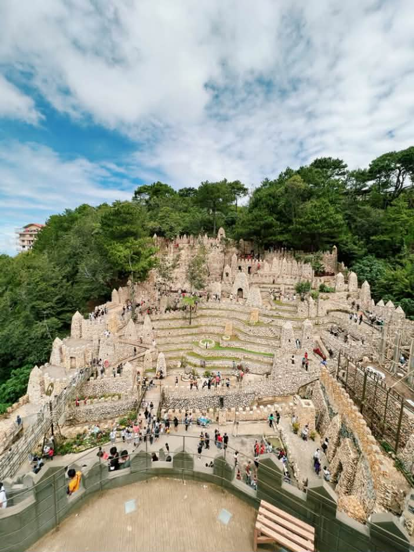

Boracay White Beach

Boracay White Beach is located in Malay, Aklan. It is famous for its fine white sand, clear blue water, and beautiful beach views. Visitors can enjoy swimming, relaxing, and watching the sunset.
Discover the Beauty of Our Islands
Discover some beautiful destinations in the Philippines. From white-sand beaches to amazing stone structures, these places offer memorable travel experiences.

Boracay White Beach is located in Malay, Aklan. It is famous for its fine white sand, clear blue water, and beautiful beach views. Visitors can enjoy swimming, relaxing, and watching the sunset.

El Nido is a popular destination in Palawan known for its limestone cliffs, clear lagoons, and beautiful islands. Visitors can enjoy island hopping, kayaking, and exploring nature.

Igorot Stone Kingdom is a tourist attraction in Baguio City. It features impressive stone structures and terraces inspired by Cordilleran culture and traditions.
Visit the Philippines Travel website for more travel inspiration.